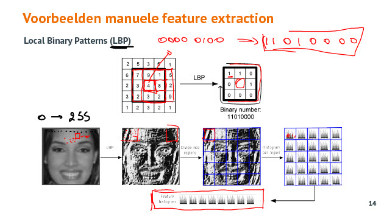
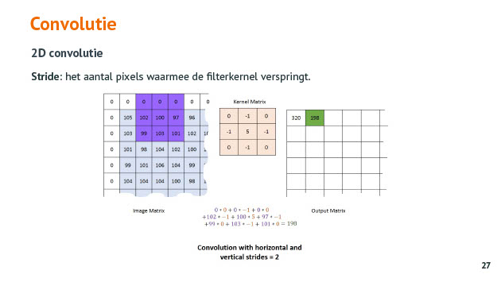
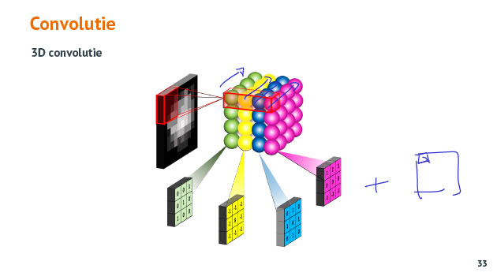
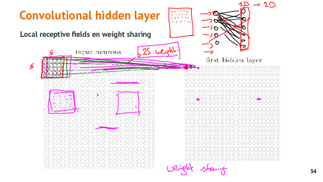
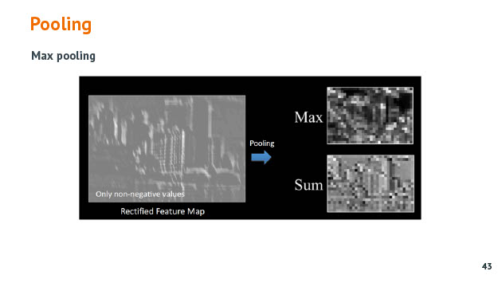
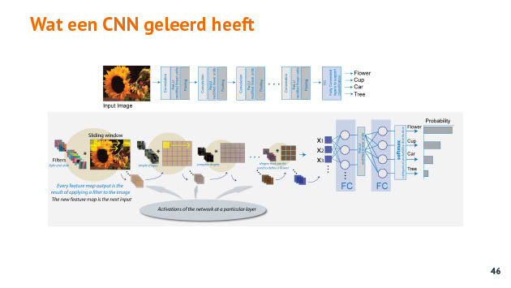

Convolutional Neural Networks
Tags: AI CNN
Date: 2021-03-19
Type: Cursus topic
Toepassingen van CNN
Waarvoor gebruik je een CNN ?
- object detectie : box rond object in het beeld tekenen (bijv YOLO)
- segmentatie : gebieden waar objecten zijn in kleuren
- pose estimation : bewegingstracking
- style transfer : stijl van ene afbeelding toepassen op andere afbeelding
- image caption : beschrijven wat er te zien is op een afbeelding
Motivatie voor het gebruik van CNN's
Feature extraction
Bij ML moet je feature extraction doen = de relaties tss de punten die het beeld vormen identificeren. Bijv alle verticale, horizontale, diagonale lijnen.
Bij gezichtsherkenning moet je de keypoints vinden (wenkbrauwen, neus, mond, kin) en dat zijn features die je classifier kan identificeren. Mbv die 60 features kan je dan proberen unieke gezichten te herkennen (als belichting, ... geen roet in het eten gooien)
LBP

LBP (Local Binary Patterns) gebruikt om relaties tss onderlinge pixels te gaan zoeken. (blokje pixels nemen en omringende pixels van centrale pixel vertalen : groter = 1/ kleiner = 0)
Het resultat hiervan wordt nogmaals opgedeeld in regions en van elk deel wordt een histogram genomen. Het histogram geeft dan een bepaald patroon weer dat uniek is voor een gezicht. Dit histogram is input voor de classifier. Nadeel hieraan is deze techniek gevoelig is voor translaties : de belichting is anders of de positie van het gezicht is wat schuiner, meer naar boven of beneden dan klopt het histogram van die region niet meer.
Verschuivingen bij CNN ? Zitten mechanismen in om kleine verschuivingen op te vangen.
Architectuur van een CNN
CNN : Feature extractor + classifier
CNN gaat zelf patronen herkennen in feature extractor = opvolging van CONV (convolution) (Relu) en Pooling laag.
Convolutie
Convolution wordt soms Kernel of soms Support genoemt
om bluring te doen bijv kan je een Kernel nemen van 3 op 3 en waar overal 1/9 als waarde neemt.
Valid Mode
Kernel gaat niet buiten buiten de input waardoor de output kleiner is dan de input.
Same Mode
Je voegt zero padding toe zodat de input en output lengte gelijk is.
Full Mode
Je voegt zero padding toe zodat de filterkernel buiten de input kan met minstens 1 overlap.
Stride
Als je altijd 1 cel opschuift horizontaal en vertikaal
Als je 2 cellen opschuift hor en vert.

Berekening output grote
Dilation
Bij dilatie (verdunning) gaat de mapping met de kernel steeds een cel overslaan.
Waarom is convolutie bruikbaar ?
convolutie is gerelateerd aan correlatie, inwelke mate patronen in je data gelijklopend zijn (ene stijgt andere stijgt, ene daalt andere daalt)
Output resultaat geeft weer hoe sterk kernel patroon terug te vinden is in de input. (1 = 100% terug te vinden)
Convolution gaat pixels vertalen naar feature maps die vertellen welke structuren waar aanwezig zijn in de foto.
Bij kleuren afbeelding worden de kernel berekeningen van de drie lagen opgeteld waardoor je een 2D output krijgt. De kleurenkanalen worden plat gedrukt.

Hoe past dit in een NN ?

1 feature map = 1 neuron
Elke feature map zal op zoek gaan naar een bepaald patroon. Hoe meer feature maps hoe meer patronen je kan zoeken. Belangrijk hierbij is dat de weights random worden ingesteld zodat je op zoek gaat naar andere patronen per feature map. Maar ook hoe meer weights, hoe meer berekeningen je moet doen. Hierdoor kan je model ook meer kennen/leren en kan je meer last hebben met overfitting.
Waar kijkt een bepaald patroon dan naar ?
Activatiefunctie
Met de activatiefunctie ga je dan alle negatieve waarden op nul zetten.
Pooling
Max Pooling
Hierdoor gaat CNN minder gevoelig zijn door lichte verschuivingen in de afbeelding op te vangen.

Flattening
Je kan na de Pooling nog Dropout en Batchnormalisation toevoegen.
Overfitting zal iets minder snel gebeuren omdat niet alle neuronen met de volgende laag verbonden zijn en je maar een deel van de neuronen van de ene laag naar de volgende laag in één neuron overbrengt.
Laag per laag gaat het NN van eenvoudige patronen (lijnen vert, hor, diagonaal) naar meer specifieke structuren.
Vooraleer over te gaan naar de classificatielaag mag je niet vergeten om met een Flatten laag van 2D naar 1D.
Met afbeeldingen ga je normaliseren door de pixelwaarden te delen door 255 zodat we zeker zijn dat die tussen 0 en 1 ligt. Wel opletten dat de waarden die je inleest dat die al niet genormaliseerd zijn want dan moet je niet meer delen door 255. Als je dit doet blijft er niet veel meer over en gaat je model ook niet getraind geraken.
Dropout
Wat een CNN geleerd heeft

Image Augmentation
keras : ImageGenerator. Die generator maakt afbeeldingen aan en voedt die aan het model. Het model ziet geen trainingsdata meer en weet ook niet hoeveel trainingsdata er is.
Door ImageGenerator te gebruiken kan je ook overfitting vermijden.
Zonder ImageGenerator (ongekende data = test scoort slechter en slechter en gekende data =traiinginsdata scroort bter en beter wat wijst op overrfitting):

Met ImageGenerator (geen overfitting aangezien er meer data is en meer gevarieerde data = moeilijker om van buiten te leren):

Ook de accuracy wordt hierdoor meestal beter :

Geavanceerde CNN architectuur
Sinds 1998 worden de modellen beter, meer weights en meer rekenkracht nodig. Nu zijn ze zelfs beter dan de mens in herkennen van objecten (human error 5%)

Je kan de weights zelf downloaden en in je eigen NN gebruiken. Je kan dit model dan hertrainen met eigen data. Feature extractors zijn gelijkaardig dus die moeten niet hertraind worden. Je zet die weights vast. De classifier die moet hertraind worden, train je met je eigen data.
Object dectectie
Is het detecteren van objecten in een afbeelding en ook hun positie in die afbeelding bepalen.
Sliding window over afbeelding en window wordt na elka ronde kleiner.
YOLO doet : type objecten, regressie, en object detectie, verschillende classes detecteren. YOLO heeft hiervoor verschillende uitgangen die dit afdekken.
Tensorboard
import Tensorboard
bij model.fit toevoegen : callbacks = [tensortboard]
naam log file duidelijke naam geven
cmd : tensorboard --logdir logs
logs = dir van log files en je voert commando uit in de folder van je notebook
Vragen
Q: Wanneer gebruik je een CNN ?
A: Van zodra je wil werken met afbeeldingen :
- object detectie : box rond object in het beeld tekenen (bijv YOLO)
- segmentatie : gebieden waar objecten zijn in kleuren
- pose estimation : bewegingstracking
- style transfer : stijl van ene afbeelding toepassen op andere afbeelding
- image caption : beschrijven wat er te zien is op een afbeelding
Q: Uit welke twee delen bestaat de architectuur van een CNN ? Wat kan je van elk deel vertellen ?
A: CNN is opgebouwd uit een feature extractie deel en een classificatie deel. Het feature extractie deel bestaat uit opeenvolgende convolutie en pooling lagen. Het classificatie deel begint bij een flatten laag als input, enkele hidden layers en een output laag (softmax, sigmoid, ..)
Q: Waarvoor gebruik je een convolutie ?
A: Je kan een convolutie terug vinden bij :
- filteren van signalen (geluid, afbeelding, video, ...)
- bij NN voor feature extraction (dat getraind wordt via backpropagation)
Q: Wat wil valid mode zeggen bij Convoluties ?
A: Als je valid mode gebruikt dan ga je enkel waarden berekenen waar de kernel en input elkaar overlappen. De kernel van 3 op 3 bijv gaat altijd overlappen met de input matrix. Hierdoor gaat de output kleiner zijn dan de input.
Q: Wat is het effect als je convoluties met valid mode gebruikt ?
A: Het resultaat gaat kleiner zijn dan de input.
Q: Wat is het voordeel en nadeel als je same mode gebruikt bij convoluties ?
A: Op voorhand aan input extra rijen en kolommen met nullen toevoegen zodanig dat na filtering je output even groot is als de input. Het nadeel is dat je data toevoegt die corrupt is.
Q: Wat is het effect van full mode bij convoluties ?
A: De input wordt uitgebreid met extra rijen en kolommen opgevuld met nul. Hierdoor kan de kernel met minimum met 1 cel overlappen. Het eindresultaat is dat je extra rijen/kolommen in je output krijgt.
Q: Wat is de stride bij een convolutie ?
A: De sprong waarmee je kernel gaat opschuiven (hoizontaal of vertikaal). Als je sprong > 1 gaat de output wel kleiner worden omdat je minder convoluties gaat berekenen.
Q: Hoe bereken je de grote van de output na convolutie ?
A:
Q: Wat is dilated convolution ?
A: Het gebied dat geselecteerd wordt om door de kernel te gaan, wordt beperkt door elke tweede kolom en rij niet over te zetten. Vooral gebruikt als je een groter gebied wil bekijken bijv bij segmentatie.
Q: Waarom kan je met convolutie object detectie, ... doen ?
A: Convolutie is gerelateerd aan correlatie. Het zoekt verbanden tss pixels, patronen. De output geeft weer hoe sterk de kernel, een bepaald patroon, terug te vinden is in de input. Convolotie gaat pixels vertalen in feature maps = patroon.
Q: Hoe gaat convolutie om met kleuren ?
A: De drie lagen, RGB, hebben elke hun kernel en de berekeningen ervan van dezelfde posities worden samengeteld waardoor je van 3D naar 2D gaat.
Q: Worden alle neuronen van de input layer verbonden met de first hidden layer in een CNN mbv een convolutie ? Hoe zit dit met de weights ?
A: Niet alle neuronen van de input layer worden verbonden met de first hidden layer (local receptive fileds). Enkel de neuronen van de input layer die nodig zijn voor de kernel berekening zijn verbonden met het output neuron. De gewichten die hierbij gebruikt worden zijn gedeeld (weight sharing).
Q: Waarvoor wordt Pooling gebruikt in een CNN ? Waarom is dit nodig ? Welke varianten ken je ?
A: Met pooling kan je je feature maps verkleinen. Hierdoor blijft je NN berekenbaar, heb je minder geheugen nodig, beperk je het aantal parameters (waardoor je overfitting gaat beperken). Varianten : Max Pooling, Average Pooling,
Q: Hoe zorg je er bij een CNN voor dat kleine verschuivingen van het object in een afbeelding geen invloed heeft op de herkebaarheid ?
A: Door pooling te gebruiken in een CNN ga je het beeld subsamplen (krimpen). Je doet dit door een aantal pixels samen te nemen tot 1 via aggregatiefunctie : maximum, average, ... Door verschillende pixels samen te nemen speelt de exacte locatie van die pixel minder een rol.
Q: Waarom heeft dropout toepassen in een CNN minder zin ?
A: Dropout zijn bij CNN overbodig omdat ze minder parameters (weights) hebben en werkt dus minder goed.
Q: Wat doet een flatten laag in een NN ?
A: Die zorgt ervoor dat je van een 2D naar een 1D laag gaat zodat je classificatie kan doen.
Q: Wat wil de 32 zeggen in model.add(Conv2D(32, kernel_size=(3, 3), acxtivation='relu', input_shape=input_shape)) ?
A: Dit wil zeggen dat er een convolutional layer toegevoegd met 32 feature 2D maps of naar 32 patronen wil zoeken.
Q: Wat is image augmentation ?
A: Extra afbeeldingen maken om op te trainen door bestaande afbeeldingen aan te passen :
- translatie
- rotatie
- grote
- kleur
- achtergrond
- ruis
- inzoomen
Q: Wat zegt deze grafiek over de training van het NN ?
A: Vanaf 10 epochs zien we dat het model de trainingsset uit het hoofd begint te leren en dat het model slechter en slechter wordt op nieuwe data (testset)
Q: Wat zegt deze grafiek over de training van het NN ?
A: Het model wordt beter en beter. Er is geen sprake van overfitting omdat de loss op de trainingsset blijft zakken in dezelfde mate als de loss voor de testset blijft zakken.
Q: Hoe kan je bij een CNN ervoor zorgen dat er geen overfitting is?
A: Je kan extra data toevoegen in je trainingsset mbv een Image Genrator waardoor het model meer data en meer gevarieerde data ziet zodat het deze minder van buiten kan leren en overfitting moeilijker is.
Q: Wat kan je doen om een CNN te trainen als je weinig data en/of rekenkracht hebt ?
A: Gebruik maken van Transfer learning
Q: Wat zijn skip connections in een NN ?
A: Bij het uitbouwen van het NN gaat de data niet enkel door alle lagen maar wordt diezelfde data aan volgende lagen ook nog eens ongefilterd aangeboden worden zodat het NN zelf kan bepalen in welke mate die filtering die gebeurt door die tussenlagen nuttig is.
Q: Wat is het verschil tussen object detectie, object classificatie en object segmentatie ?
A:
Q: Wat is er typisch aan YOLO ? Waarvoor staat YOLO ?
A: YOLO = you only look once is een object detectie CNN. Special aan YOLO is dat het realtime zowel de types objecten, object detectie/locatie en classificatie als output geeft. Hiervoor gebruikt het geen sliding window.
Q: Wat is Transfer Learning ? Wat is het voordeel ?
A: Transfer Learning is een reeds getraind model als basis nemen om je eigen classificaties op te trainen. Het voordeel is dat je sterke modellen die veel parameters, veel data en veel rekenkracht vroegen om te trainen als basis kan gebruiken voor je eigen model. Dit doe je door de weights van dit model te downloaden en in je eigen NN te zetten. Je zou bijv YOLO kunnen downloaden, de feature extraction weights bevriezen, je eigen classifier toevoegen aan het NN en dan het model trainen op je eigen afbeeldingen. Bij je eigen training moet je dan enkel de weights van de classifiers herberekenen en niet de 100000de parameters van de feature extraction.